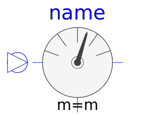
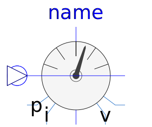
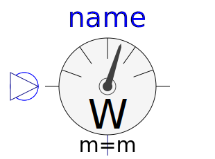

This package contains multiphase potential, voltage, and current sensors.
| Name | Description |
|---|---|
| Multiphase potential sensor | |
| VoltageSensor | Multiphase voltage sensor |
|
|
Continuous quasi voltage RMS sensor for multi phase system |
| Multiphase current sensor | |
|  CurrentQuasiRMSSensor | Continuous quasi current RMS sensor for multi phase system |
| Multiphase instantaneous power sensor | |
|  MultiSensor | Multiphase sensor to measure current, voltage and power |
|  AronSensor | threephase Aron sensor for active power |
| threephase sensor for reactive power |